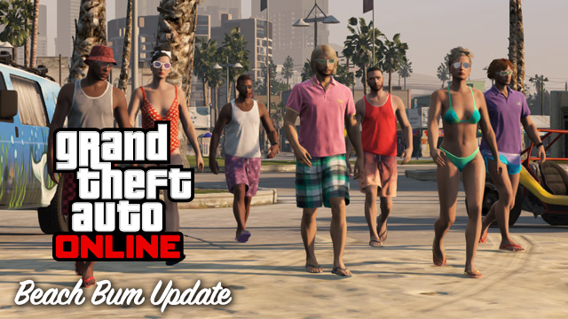
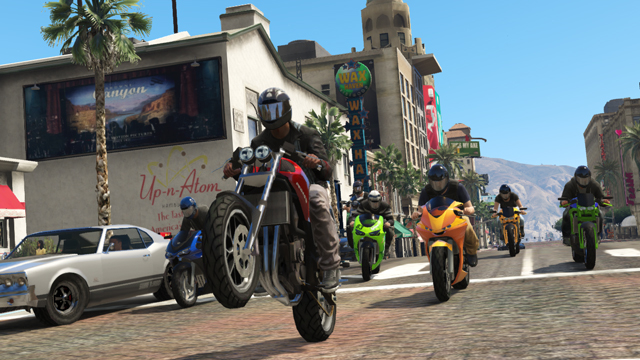
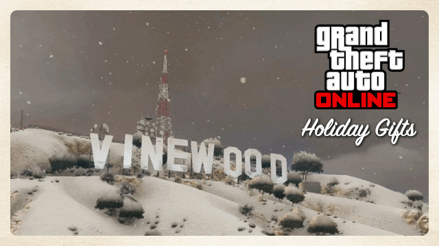

Beach Bum Update
19 November
This update adds a few new vehicles, including off-road vehicles and a speed boat. Many new beach-themed clothing items were also added along with two new weapons: the SNS Pistol and the Bottle.
The year Los Santos opened its doors to the world: a rocky launch, an apology from Rockstar and the first free content updates.
Each entry below describes one update, in the order in which it arrived.

19 November
This update adds a few new vehicles, including off-road vehicles and a speed boat. Many new beach-themed clothing items were also added along with two new weapons: the SNS Pistol and the Bottle.

11 December
The update introduced new tools to allow players to create their own Races and Deathmatches. The update teaser also hinted at future content for both Grand Theft Auto V and Online, with the forthcoming Heists update, due to be released in 2014, but later delayed until 2015, and the GTA V: Story Mode Updates, a series of large content updates for Grand Theft Auto V which were later cancelled.
17 December
A very small update that added only a new gamemode, a team-based competitive mode in which players fight to hold goods.

24 December
The update gifted players with festive treats, including new clothing items, Snapmatic photo filters and borders, and discounts on select vehicles and properties. San Andreas was also covered in snow throughout the holiday season. All content was made available on 24 December 2013, and expired on 5 January 2014. All content from the update, including the clothing items and snowfall, has returned every subsequent holiday season as part of the Festive Surprise series of events and updates.
The first months were difficult. Long loading screens, failed connections and lost characters filled the forums, and many players asked for the missing features that had been promised before launch.
Still, the world felt alive and the free updates that followed won back a large part of the audience. By the end of the year the main topic was no longer whether the game worked, but what Rockstar would add next.
This pattern, a bumpy start followed by regular free content, would repeat itself many times in the following years.